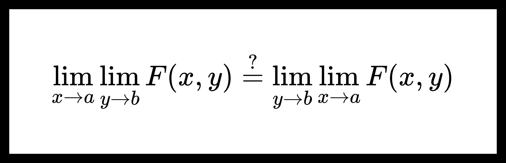

Теорема о равенстве повторных пределов.
Повторные пределы возникают, когда мы последовательно вычисляем пределы функции по разным переменным. Вопрос о равенстве таких пределов важен в анализе, особенно при работе с несобственными интегралами и рядами. Теорема о равенстве повторных пределов устанавливает условия, при которых порядок взятия пределов можно менять.
Теорема. О равенстве повторных пределов.
Пусть D⊆Rp,E⊆Rp. Функция F:D×E→Rs. Пусть a — предельная точка множества D, а b — предельная точка множества E. Также пусть выполнено следующее:
-
∀y∈E ∃limx→aF(x,y)=ψ(y);
-
F(x,y)y→b⇉x∈Dφ(x).
Тогда
∃y→blimψ(y),∃x→alimφ(x) и y→blimψ(y)=x→alimφ(x).
Доказательство:
Пусть верно условие теоремы, тогда выполнено
-
Условие Коши равномерной сходимости
∀ε>0 ∃U∘b ∀y1,y2∈U∘b∩E ∀x∈D ∥F(x,y1)−F(x,y2)∥<3ε(1)
-
Условие поточечной сходимости при x→a
∀y∈E ∀ε>0 ∃V∘a ∀x∈V∘a∩D ∥F(x,y)−ψ(y)∥<3ε(2)
-
Условие поточечной сходимости при y→b
∀x∈D ∀ε>0 ∃U∘b ∀y∈U∘b∩E ∥F(x,y)−φ(x)∥<ε(3)
Шаг 1. Покажем, что ∃limψ(y).
Из утверждений (1),(2) можно заключить, что ∀ε>0
∃U∘b ∀y1,y2∈U∘b∩E ∃Va1∘ ∃Va2∘ ∀x∈Va1∘∩Va2∘∩D
∥F(x,y1)−ψ(y1)∥<3ε, ∥F(x,y2)−ψ(y2)∥<3ε,
∥F(x,y1)−F(x,y2)∥<3ε.
Поэтому
∥ψ(y1)−ψ(y2)∥=∥[ψ(y1)−F(x,y1)]−[ψ(y2)−F(x,y2)]+[F(x,y1)−F(x,y2)]∥≤
≤∥ψ(y1)−F(x,y1)∥+∥ψ(y2)−F(x,y2)∥+∥F(x,y1)−F(x,y2)∥<
<3ε+3ε+3ε=ε.
Получим, что
∥ψ(y1)−ψ(y2)∥<ε .
Для ψ(y) выполнено условие Коши существования предела, поэтому
∃y→blimψ(y).
Шаг 2. Покажем, что ∃limφ(x)=limψ(y).
Пусть A=limψ(y), тогда
∀ε>0 ∃U∘b ∀y∈U∘b∩E ∥ψ(y)−A∥<ε.(4)
Из (2),(3),(4) можем получить следующее
∀ε>0 ∃V∘a ∀x∈V∘a∩D ∃Ub1∘ ∃Ub2∘ ∀y∈Ub1∘∩Ub2∘∩D
∥F(x,y)−ψ(y)∥<3ε, ∥F(x,y)−φ(x)∥<3ε, ∥ψ(y)−A∥<3ε.
Поэтому
∥φ(x)−A∥=∥[φ(x)−F(x,y)]−[ψ(y)−F(x,y)]+[ψ(y)−A]∥≤
≤∥F(x,y)−φ(x)∥+∥F(x,y)−ψ(y)∥+∥ψ(y)−A∥<
<3ε+3ε+3ε=ε.
Получим, что
∥φ(x)−A∥<ε .
Можем заключить, что
∃x→alimφ(x)=A.